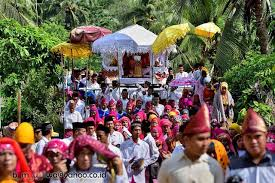
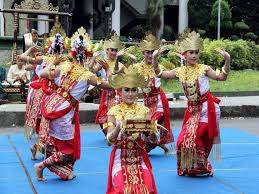
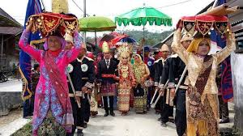

TAYUHAN
Tayuhan adalah upacara adat Lampung yang dilakukan untuk merayakan suka cita, seperti pernikahan, khitanan, hasil panen yang berlimpah, hingga pembangunan rumah.
TARI BEDANA
Tarian Bedana merefleksikan bentuk penjagaan diri terutama terhadap pemuda pemudi lampung untuk pergaulan agar hati-hati. Tarian ini mulanya hanya dilakukan oleh laki-laki dan ditonton oleh keluarganya saja.
GAWI ATAU PEPADUN
Gawi atau Begawi. Tradisi Gawi atau Begawi dilaksanakan untuk ritual kehidupan, di antaranya kelahiran anak, menjelang dan saat pernikahan hingga pemberian gelar adat Begawi Cakak Pepadun.